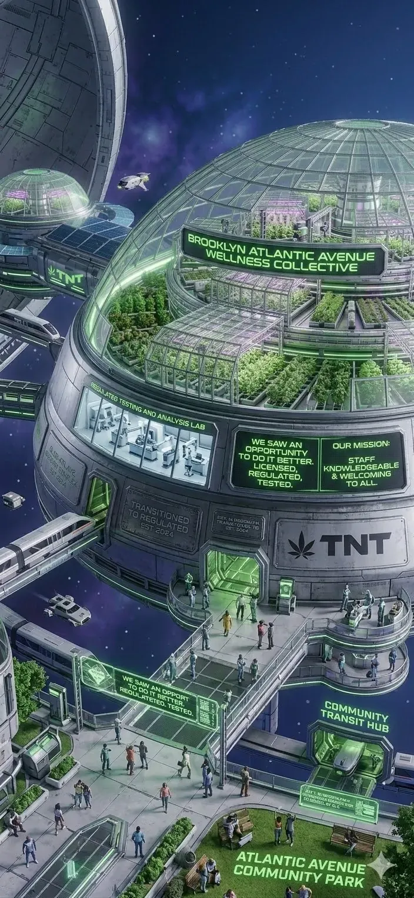

Tested and Transparent
Every product on our shelves is tested by an OCM-approved laboratory for potency, pesticides, heavy metals, mold, and residual solvents. If it does not pass, it does not make the shelf.
You must be at least 21 years of age to view this site. Please verify your age to continue.
You must be 21 or older to enter this site.
Licensed by NY Office of Cannabis Management · Adult-Use Retail · 994 Atlantic Ave, Brooklyn, NY 11238 · Adults 21+ Only
Walk-in · Open daily10:00 AM – 10:00 PM
Browse the MenuBrand / Mission Log
Brooklyn's neighborhood cannabis dispensary on Atlantic Avenue. Quality products, honest recommendations, no judgment about your experience level. Licensed by the New York Office of Cannabis Management.

Who We Are
Take N' Toke exists because we believe buying cannabis should be straightforward. Walk in, tell us what you are looking for, and leave with something you understand and trust.
We opened on Atlantic Avenue in Brooklyn because we wanted to be part of this community. Not a chain, not a brand play. A local shop with knowledgeable staff who treat every customer like a neighbor.
Every product we sell is lab-tested. Every recommendation we make is honest. Every question gets a real answer. That is the standard, and we hold ourselves to it every day.
994 Atlantic Avenue, Brooklyn, NY 11238
Our Mission
We believe the legal cannabis market should be better than what came before it. Better products, better information, better service, and genuine respect for every person who walks through our door.
Every product on our shelves is tested by an OCM-approved laboratory for potency, pesticides, heavy metals, mold, and residual solvents. If it does not pass, it does not make the shelf.
Our staff recommends products based on what you are looking for, not what has the highest margin. We would rather you leave with the right product at $25 than the wrong one at $60.
First-time cannabis user? Experienced consumer? Either way, we meet you where you are. No judgment, no gatekeeping, no complicated jargon unless you ask for it.
We opened on Atlantic Avenue because we wanted to be part of this neighborhood, not just sell to it. We hire locally, support local events, and treat our neighbors like neighbors.
Our Story
New York legalized adult-use cannabis to correct decades of harm. The legal market was designed to prioritize communities impacted by prohibition, create economic opportunity, and give consumers access to tested, regulated products.
TNT Vortex Depot — Brooklyn Operations
We opened Take N' Toke because we wanted to do it right. Not to cash in on a trend, but to build a dispensary that actually serves its neighborhood. One where the staff knows what they are talking about, the products are genuinely tested, and nobody feels judged for what they do or do not know.
We also believe in cannabis equity. New York's legal market was designed to prioritize communities impacted by prohibition, and we support that mission through our hiring practices, vendor relationships, and community programming.
We are not trying to be the biggest dispensary in Brooklyn. We are trying to be the one your neighborhood trusts.
What Sets Us Apart
There are a lot of places to buy cannabis in Brooklyn. Here is why people come back to us.
Our staff understands terpene profiles, cannabinoid ratios, consumption methods, and how different products interact with the body. We can explain the science in plain language.
We do not stock everything. We stock what we trust. Our buyers evaluate every brand for quality, consistency, lab results, and value before it reaches our shelves.
Walk in knowing nothing about cannabis and we will explain everything. Product types, dosing, onset times, what to expect, and what to avoid. We built our experience around new consumers.
We serve 12 Brooklyn neighborhoods from Atlantic Avenue. Our staff knows the transit routes, the local spots, and the community. We are not a chain. We are your local shop.
Ask about any product's lab results and we will show you. Potency, terpene profile, contaminant screening. Full transparency on everything we sell.
Community
We are not just located in Brooklyn. We are part of it. Our staff lives here. We shop at the same stores, ride the same trains, and walk the same blocks as our customers.
Cannabis legalization created an opportunity to build something positive, and we take that seriously. We support cannabis equity through our hiring practices, vendor relationships, and community programming.
Full OCM compliance, seed-to-sale tracking, proper packaging and labeling. We operate by the book every single day.
Free cannabis education for customers and the community. We believe informed consumers make better choices.
Ongoing training in cannabis science, product knowledge, responsible sales, and customer service for every team member.
Participating in local events, supporting neighborhood organizations, and building real relationships in the communities we serve.
Compliance
We operate fully within New York State cannabis regulations. Transparency is not optional for us. Here is exactly how we stay compliant:
Atlantic Avenue
994 Atlantic Avenue, Brooklyn, NY 11238. We are between Washington Avenue and Classon Avenue in Prospect Heights, steps from the Barclays Center and Brooklyn Museum area.
Parking: Street parking available on Atlantic Avenue and surrounding side streets. No dedicated lot.
Walk-in only. No delivery. Valid government-issued photo ID required for entry. Adults 21+ only.
SUBWAY
Our Team
Every person at Take N' Toke is trained, knowledgeable, and here because they care about cannabis done right.
Our front-line staff. Trained in cannabis science, product knowledge, and customer service. They ask about your goals, not your experience level, and make recommendations that fit.
The team that curates our menu. They evaluate new brands, review lab results, negotiate pricing, and ensure variety across product types, potency levels, and price points.
Keeps us legal. OCM regulations, inventory tracking, packaging standards, age verification, and record keeping. They make sure we operate by the book, every day.
Manages our neighborhood relationships, educational programming, and local partnerships. They keep us connected to the Brooklyn communities we serve.
We hire people who care about this work. If you are knowledgeable about cannabis, passionate about community, and want to be part of something real — we want to hear from you.
Get In Touch